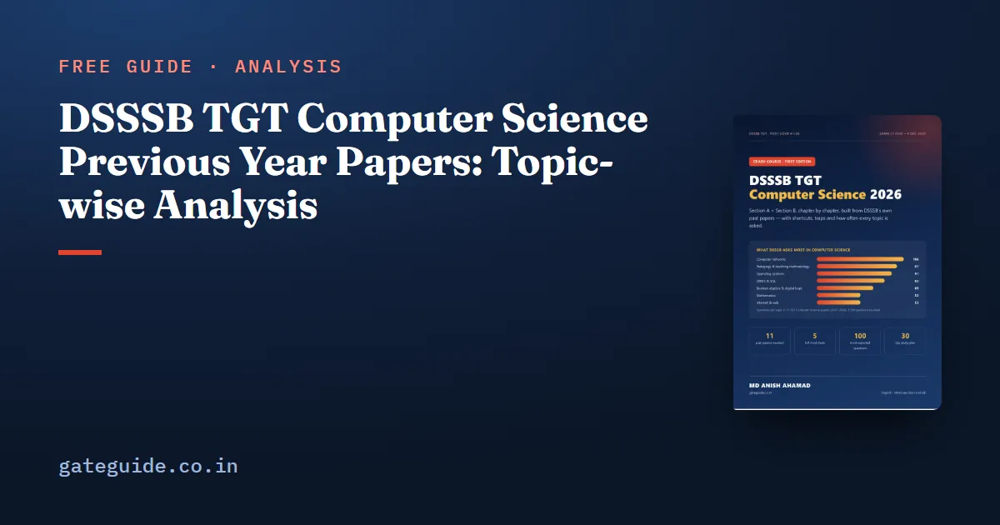

DSSSB TGT Computer Science Previous Year Papers: Topic-wise Analysis

DSSSB TGT Computer Science previous year papers are the best guide to what the 2026 paper will ask. We counted every Section B question in 11 TGT Computer Science papers — 1,100 questions from 2017, 2021, 2023 and 2024 — and grouped them by topic. This guide gives the counts, the trends year by year, and what they mean for your last weeks.
In this guide
Key takeaways
- 11 papers were counted: 2017 (Set D), five papers of 2021 (Post Code 91/20), four shifts of June 2023 (39/22) and February 2024 (70/23, NDMC).
- Networks, teaching methodology, operating systems and DBMS give about a third of Section B.
- Digital logic jumped in 2021 (55 questions in five papers); web technology was strong in 2023.
- About 13% of Section B is commerce, physics or other non-core topics, all from the official syllabus.
- Since 2023 every paper ends Section B with exactly 10 teaching-methodology questions.
The words you will meet
- Shift — DSSSB holds the same post's exam in several shifts with different papers; each shift paper is a separate data point.
- Post Code — 91/20, 39/22 and 56/24 were the Directorate of Education TGT CS posts; 70/23 was the NDMC post, with a CBSE-style syllabus.
The papers counted
| Year | Post code | Papers | How labelled |
|---|---|---|---|
| 2017 | 192/14 | 1 (Set D) | question by question |
| 2021 | 91/20 | 5 | from the official answer sheets, topics by keyword |
| 2023 | 39/22 | 4 shifts (24–25 June) | question by question |
| 2024 | 70/23 | 1 (7 February) | question by question |
Topic-wise counts (Section B, 11 papers)
| Topic | 2017 | 2021 (5) | 2023 (4) | 2024 | Total | Per paper |
|---|---|---|---|---|---|---|
| Computer networks | 14 | 48 | 37 | 7 | 106 | 9.6 |
| Teaching methodology | – | 51 | 38 | 8 | 97 | 8.8 |
| Operating systems | 17 | 35 | 29 | 10 | 91 | 8.3 |
| DBMS and SQL | 12 | 45 | 11 | 15 | 83 | 7.5 |
| Boolean algebra and digital logic | – | 55 | 11 | 3 | 69 | 6.3 |
| Mathematics | 1 | 19 | 33 | – | 53 | 4.8 |
| Internet and web | 7 | 10 | 30 | 6 | 53 | 4.8 |
| Software engineering | 3 | 27 | 14 | – | 44 | 4.0 |
| Number systems | 4 | 24 | 5 | 4 | 37 | 3.4 |
| C programming | 10 | 18 | 8 | – | 36 | 3.3 |
| Algorithms | 2 | 17 | 10 | – | 29 | 2.6 |
| Memory | 9 | 10 | 9 | – | 28 | 2.5 |
| Data structures | 3 | 17 | 6 | – | 26 | 2.4 |
| Java | 2 | 13 | 11 | – | 26 | 2.4 |
| C++ and OOP | 6 | 11 | 8 | – | 25 | 2.3 |
| Computer graphics | 3 | 9 | 12 | – | 24 | 2.2 |
| Python | – | 2 | 2 | 20 | 24 | 2.2 |
| Cyber security | – | 1 | 9 | 10 | 20 | 1.8 |
| Commerce, physics, other | – | 61 | 85 | 2 | 148 | 13.5 |
Remember: the 2024 paper was for NDMC with a CBSE-style syllabus, which is why it had 20 Python questions. Post Code 41/26 is a Directorate of Education post like 2021 and 2023, so those years are the better guide.
Trends worth knowing
- Teaching methodology is fixed at 10. Every paper from 2023 ends Section B with ten pedagogy questions — child development, assessment, methods, schemes. Read our teaching methodology guide.
- Networks never drops. It is in the top three in every year. The concepts are stable: OSI and TCP/IP layers, port numbers, devices, IP classes and subnet masks. Practise with our networking questions.
- Digital logic is big in the DoE papers. 2021 asked 11 per paper on gates, Boolean simplification and flip-flops.
- Maths appears in DoE papers — sets, graphs, interpolation and statistics, around 8 per paper in 2023.
- Non-core topics are real. Accounting cycles, demand forecasting, MIS, .NET and physics units appear because the syllabus lists them.
Trap: reading the 2024 paper alone would push you towards Python and away from digital logic. For a DoE post that would be a costly mistake.
What this means for 2026
Plan by average per paper, not by what feels important. A paper of 100 Section B questions can be expected to carry roughly 9–10 networks, 10 pedagogy, 8 OS, 7–8 DBMS, 6 digital logic, 5 web and 5 maths questions, with about 12 non-core questions. Our important topics guide lists the exact repeated concepts inside each topic, and the syllabus guide maps them to the official headings.
How to practise with past papers
Reading past papers is not the same as practising them. Use them in three passes:
- First pass (untimed): attempt every question in one topic you have just finished — all networks questions, say — and mark which ones you could not answer.
- Second pass (timed sections): attempt one past shift's Section B in 60 minutes and score it with the −0.25 rule.
- Third pass (full paper): in the last two weeks, sit a full 200-question paper in two hours.
Remember: when an official key looks wrong, check a standard textbook. DSSSB's draft keys have occasional errors, which candidates correct through objections — learn the correct concept, not the error.
How the counts were made
Six of the eleven papers — 2017, the four 2023 shifts and 2024 — were labelled question by question. The five 2021 papers were labelled from the official answer sheets, with topics assigned by keywords, which is reliable for clear-cut topics such as networks or SQL and less precise for mixed questions. That is why the analysis gives averages and trends rather than exact predictions for a single topic in a single shift.
Using the analysis without over-trusting it
Averages describe a typical paper, not your exact shift. Any one shift can ask two more DBMS questions and two fewer on graphics. Use the counts to decide the order and depth of study, and use mocks to make sure no topic is left completely untouched. A candidate who covers the top ten topics well and reads the rest once will be ready for whatever mix appears.
If you are unsure where to begin, start with the topic that gave the most questions in the past papers and work downwards. Write short notes as you go, revise them every few days, and test yourself with timed questions rather than only reading. Steady daily work over the remaining weeks is far more effective than long sessions in the final days, and it leaves you calm enough on the exam day to read every question carefully.
Quick revision
- 11 TGT CS papers, 1,100 Section B questions were counted.
- Networks (9.6), pedagogy (8.8), OS (8.3) and DBMS (7.5) per paper lead.
- Pedagogy is exactly 10 per paper since 2023.
- DoE papers (2021, 2023) are the best guide for 41/26; 2024 was NDMC.
- About 13% is non-core but official: accounting, economics, physics, .NET.
Frequently asked questions
Where can I find DSSSB TGT Computer Science previous year papers?
DSSSB publishes question papers with answer keys after many exams on its website, under answer keys and the question-bank pages. Papers of the 2021 (Post Code 91/20) and 2023 (39/22) TGT Computer Science exams were available there. The 2024 and 2025 question-bank pages showed no content when checked in October 2026.
Which topic is asked most in DSSSB TGT Computer Science?
Across 11 TGT Computer Science papers, computer networks gave the most questions - 106 of 1,100, about 9.6 per paper. Teaching methodology (97), operating systems (91) and DBMS with SQL (83) follow. Together these four give roughly a third of Section B.
Do DSSSB TGT CS papers repeat questions?
Exact repeats are rare. What repeats is the topic and the type of question - port numbers, OSI layers, scheduling, normal forms, SQL clauses, number-system conversions and Piaget's stages appear in almost every paper, each time with different wording or numbers.
Why are there accounting and physics questions in a computer science paper?
The official syllabus for the Directorate of Education post includes business communication, financial accounting, business economics, basic physics and management information systems. In the 2021 and 2023 papers these gave roughly 12 to 21 questions per paper; the 2024 NDMC paper had almost none.
Sources
Dates, vacancies and the syllabus are set by DSSSB and can change. Always confirm at dsssb.delhi.gov.in. GATE Guide is not affiliated with DSSSB.